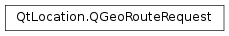

QGeoRouteRequest¶
Synopsis¶
Functions¶
- def
__eq__(other) - def
__ne__(other) - def
excludeAreas() - def
extraParameters() - def
featureTypes() - def
featureWeight(featureType) - def
maneuverDetail() - def
numberAlternativeRoutes() - def
routeOptimization() - def
segmentDetail() - def
setExcludeAreas(areas) - def
setExtraParameters(extraParameters) - def
setFeatureWeight(featureType, featureWeight) - def
setManeuverDetail(maneuverDetail) - def
setNumberAlternativeRoutes(alternatives) - def
setRouteOptimization(optimization) - def
setSegmentDetail(segmentDetail) - def
setTravelModes(travelModes) - def
setWaypoints(waypoints) - def
setWaypointsMetadata(waypointMetadata) - def
travelModes() - def
waypoints() - def
waypointsMetadata()
Detailed Description¶
The
PySide2.QtLocation.QGeoRouteRequestclass represents the parameters and restrictions which define a request for routing information.The default state of a
PySide2.QtLocation.QGeoRouteRequestinstance will result in a request for basic route segment and navigation maneuvers describing the fastest route by car which covers the given waypoints.There may be significant variation in the features supported by different providers of routing information, or even in the features supported by the same provider if different levels of authorization are used.
There are several functions in
PySide2.QtLocation.QGeoRoutingManagerwhich can be used to check which features are supported with the current provider and authorization level.See also
PySide2.QtLocation.QGeoRoutingManager
-
class
PySide2.QtLocation.QGeoRouteRequest(origin, destination)¶ -
class
PySide2.QtLocation.QGeoRouteRequest(other) -
class
PySide2.QtLocation.QGeoRouteRequest([waypoints=list()]) Parameters: - origin –
PySide2.QtPositioning.QGeoCoordinate - other –
PySide2.QtLocation.QGeoRouteRequest - destination –
PySide2.QtPositioning.QGeoCoordinate - waypoints –
Constructs a request to calculate a route between
originanddestination.Constructs a route request object from the contents of
other.Constructs a request to calculate a route through the coordinates
waypoints.The route will traverse the objects of
waypointsin order.- origin –
-
PySide2.QtLocation.QGeoRouteRequest.TravelMode¶ Defines modes of travel to be used for a route.
Constant Description QGeoRouteRequest.CarTravel The route will be optimized for someone who is driving a car. QGeoRouteRequest.PedestrianTravel The route will be optimized for someone who is walking. QGeoRouteRequest.BicycleTravel The route will be optimized for someone who is riding a bicycle. QGeoRouteRequest.PublicTransitTravel The route will be optimized for someone who is making use of public transit. QGeoRouteRequest.TruckTravel The route will be optimized for someone who is driving a truck.
-
PySide2.QtLocation.QGeoRouteRequest.FeatureType¶ Defines a feature which is important to the planning of a route.
These values will be used in combination with
QGeoRouteRequest.FeatureWeightto determine if they should or should not be part of the route.Constant Description QGeoRouteRequest.NoFeature Used by QGeoRoutingManager.supportedFeatureTypes()to indicate that no features will be taken into account when planning the route.QGeoRouteRequest.TollFeature Consdier tollways when planning the route. QGeoRouteRequest.HighwayFeature Consider highways when planning the route. QGeoRouteRequest.PublicTransitFeature Consider public transit when planning the route. QGeoRouteRequest.FerryFeature Consider ferries when planning the route. QGeoRouteRequest.TunnelFeature Consider tunnels when planning the route. QGeoRouteRequest.DirtRoadFeature Consider dirt roads when planning the route. QGeoRouteRequest.ParksFeature Consider parks when planning the route. QGeoRouteRequest.MotorPoolLaneFeature Consider motor pool lanes when planning the route. QGeoRouteRequest.TrafficFeature Consider the current traffic situation when planning the route. Since QtLocation 5.10
-
PySide2.QtLocation.QGeoRouteRequest.FeatureWeight¶ Defines the weight to associate with a feature during the planning of a route.
These values will be used in combination with QGeoRouteRequest::Feature to determine if they should or should not be part of the route.
Constant Description QGeoRouteRequest.NeutralFeatureWeight The presence or absence of the feature will not affect the planning of the route. QGeoRouteRequest.PreferFeatureWeight Routes which contain the feature will be preferred over those that do not. QGeoRouteRequest.RequireFeatureWeight Only routes which contain the feature will be considered, otherwise no route will be returned. QGeoRouteRequest.AvoidFeatureWeight Routes which do not contain the feature will be preferred over those that do. QGeoRouteRequest.DisallowFeatureWeight Only routes which do not contain the feature will be considered, otherwise no route will be returned.
-
PySide2.QtLocation.QGeoRouteRequest.RouteOptimization¶ Defines the type of optimization which is applied to the planning of the route.
Constant Description QGeoRouteRequest.ShortestRoute Minimize the length of the journey. QGeoRouteRequest.FastestRoute Minimize the traveling time for the journey. QGeoRouteRequest.MostEconomicRoute Minimize the cost of the journey. QGeoRouteRequest.MostScenicRoute Maximize the scenic potential of the journey.
-
PySide2.QtLocation.QGeoRouteRequest.SegmentDetail¶ Defines the amount of route segment information that should be included with the route.
Constant Description QGeoRouteRequest.NoSegmentData No segment data should be included with the route. A route requested with this level of segment detail will initialize QGeoRouteSegment.path()as a straight line between the positions of the previous and nextPySide2.QtLocation.QGeoManeuverinstances.QGeoRouteRequest.BasicSegmentData Basic segment data will be included with the route. This will include QGeoRouteSegment.path().
-
PySide2.QtLocation.QGeoRouteRequest.ManeuverDetail¶ Defines the amount of maneuver information that should be included with the route.
Constant Description QGeoRouteRequest.NoManeuvers No maneuvers should be included with the route. QGeoRouteRequest.BasicManeuvers Basic manevuers will be included with the route. This will include QGeoManeuver.instructionText().
-
PySide2.QtLocation.QGeoRouteRequest.excludeAreas()¶ Return type: Returns areas the route must not cross.
-
PySide2.QtLocation.QGeoRouteRequest.extraParameters()¶ Return type: PySide2.QtCore.QVariantMapReturns the extra parameters set for this route request.
-
PySide2.QtLocation.QGeoRouteRequest.featureTypes()¶ Return type: Returns the list of features that will be considered when planning the route. Features with a weight of
NeutralFeatureWeightwill not be returned.
-
PySide2.QtLocation.QGeoRouteRequest.featureWeight(featureType)¶ Parameters: featureType – PySide2.QtLocation.QGeoRouteRequest.FeatureTypeReturn type: PySide2.QtLocation.QGeoRouteRequest.FeatureWeightReturns the weight assigned to
featureTypein the planning of the route.If no feature weight has been specified for
featureTypethenNeutralFeatureWeightwill be returned.
-
PySide2.QtLocation.QGeoRouteRequest.maneuverDetail()¶ Return type: PySide2.QtLocation.QGeoRouteRequest.ManeuverDetailReturns the level of detail which will be used in the representation of routing maneuvers.
-
PySide2.QtLocation.QGeoRouteRequest.numberAlternativeRoutes()¶ Return type: PySide2.QtCore.intReturns the number of alternative routes which will be requested.
-
PySide2.QtLocation.QGeoRouteRequest.__ne__(other)¶ Parameters: other – PySide2.QtLocation.QGeoRouteRequestReturn type: PySide2.QtCore.boolReturns whether this route request and
otherare equal.
-
PySide2.QtLocation.QGeoRouteRequest.__eq__(other)¶ Parameters: other – PySide2.QtLocation.QGeoRouteRequestReturn type: PySide2.QtCore.boolReturns whether this route request and
otherare equal.
-
PySide2.QtLocation.QGeoRouteRequest.routeOptimization()¶ Return type: PySide2.QtLocation.QGeoRouteRequest.RouteOptimizationsReturns the optimization criteria which this request specifies should be used while planning the route.
-
PySide2.QtLocation.QGeoRouteRequest.segmentDetail()¶ Return type: PySide2.QtLocation.QGeoRouteRequest.SegmentDetailReturns the level of detail which will be used in the representation of routing segments.
-
PySide2.QtLocation.QGeoRouteRequest.setExcludeAreas(areas)¶ Parameters: areas – Sets
areasas excluded areas that the route must not cross.
-
PySide2.QtLocation.QGeoRouteRequest.setExtraParameters(extraParameters)¶ Parameters: extraParameters – PySide2.QtCore.QVariantMapSets the extra parameters
extraParametersfor the route request. The format of the extra parameters is plugin specific, and documented per plugin.
-
PySide2.QtLocation.QGeoRouteRequest.setFeatureWeight(featureType, featureWeight)¶ Parameters: - featureType –
PySide2.QtLocation.QGeoRouteRequest.FeatureType - featureWeight –
PySide2.QtLocation.QGeoRouteRequest.FeatureWeight
Assigns the weight
featureWeightto the featurefeatureTypeduring the planning of the route.By default all features are assigned a weight of
NeutralFeatureWeight.It is impossible to assign a weight to
QGeoRouteRequest.NoFeature.- featureType –
-
PySide2.QtLocation.QGeoRouteRequest.setManeuverDetail(maneuverDetail)¶ Parameters: maneuverDetail – PySide2.QtLocation.QGeoRouteRequest.ManeuverDetailSets the level of detail to use when representing routing maneuvers to
maneuverDetail.The default value is
QGeoRouteRequest.BasicManeuvers.
-
PySide2.QtLocation.QGeoRouteRequest.setNumberAlternativeRoutes(alternatives)¶ Parameters: alternatives – PySide2.QtCore.intSets the number of alternative routes to request to
alternatives. Ifalternativesis negative the number of alternative routes is set to 0.The default value is 0.
-
PySide2.QtLocation.QGeoRouteRequest.setRouteOptimization(optimization)¶ Parameters: optimization – PySide2.QtLocation.QGeoRouteRequest.RouteOptimizationsSets the optimization criteria to use while planning the route to
optimization.The default value is
QGeoRouteRequest.FastestRoute.
-
PySide2.QtLocation.QGeoRouteRequest.setSegmentDetail(segmentDetail)¶ Parameters: segmentDetail – PySide2.QtLocation.QGeoRouteRequest.SegmentDetailSets the level of detail to use when representing routing segments to
segmentDetail.
-
PySide2.QtLocation.QGeoRouteRequest.setTravelModes(travelModes)¶ Parameters: travelModes – PySide2.QtLocation.QGeoRouteRequest.TravelModesSets the travel modes which should be considered during the planning of the route to
travelModes.The default value is
QGeoRouteRequest.CarTravel.
-
PySide2.QtLocation.QGeoRouteRequest.setWaypoints(waypoints)¶ Parameters: waypoints – Sets
waypointsas the waypoints that the route should pass through.The waypoints should be given in order from origin to destination.
This request will be invalid until the waypoints have been set to a list containing two or more coordinates.
-
PySide2.QtLocation.QGeoRouteRequest.setWaypointsMetadata(waypointMetadata)¶ Parameters: waypointMetadata – Sets
waypointMetadataas the metadata for the waypoints set in this request. The metadata are intended as onePySide2.QtCore.QVariantMapper waypoint, given in the same order as the waypoints.The content of the
PySide2.QtCore.QVariantMapis somehow backend-specific, but properties that can be specified using Waypoint elements in QML can be assumed to be named and to work the same way across plugins, where supported.
-
PySide2.QtLocation.QGeoRouteRequest.travelModes()¶ Return type: PySide2.QtLocation.QGeoRouteRequest.TravelModesReturns the travel modes which this request specifies should be considered during the planning of the route.
-
PySide2.QtLocation.QGeoRouteRequest.waypoints()¶ Return type: Returns the waypoints that the route will pass through.
-
PySide2.QtLocation.QGeoRouteRequest.waypointsMetadata()¶ Return type: Returns the metadata for the waypoints in this request.
© 2018 The Qt Company Ltd. Documentation contributions included herein are the copyrights of their respective owners. The documentation provided herein is licensed under the terms of the GNU Free Documentation License version 1.3 as published by the Free Software Foundation. Qt and respective logos are trademarks of The Qt Company Ltd. in Finland and/or other countries worldwide. All other trademarks are property of their respective owners.